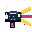
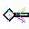
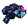
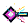
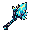
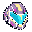
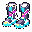

weapon_lightning_conductor_icon

Pour chaque ID, l’actif courant est à gauche et le candidat à droite. Candidats 32×32, 8–16 couleurs de la palette maître, source Aseprite éditable; QA technique passé. Ils ne sont pas intégrés. Le jeu continue d’utiliser les actifs courants jusqu’à acceptation.









